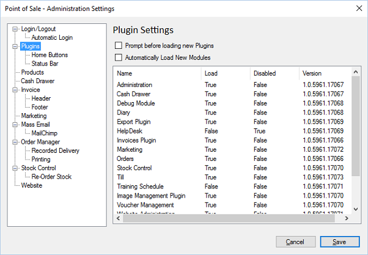

Plugin settings will allow administrators to configure which plugin modules are loaded, and
what happens when new plugins are automatically downloaded.

The POS will update and obtain new plugins automatically, as long as there is internet
access.
Prompt before loading new Plugins. If new plugin modules are downloaded
automatically, you can change this option which will prompt users that it has found new
plugins and do they wish to load them.
Automatically load New Modules. If set, this option will automatically load new plugin
modules and activate them for use but the current user.